Operating Documentation
Direction 5193575-800, Rev# 5
LightSpeed 7.X Service Information - Adv
Operating Documentation |
| Required Persons | Preliminary Reqs | Procedure | Finalization |
|---|---|---|---|
| 1 |
| Last Revised: | 24 April 2007 |
Top Cover Removal:
Raise the Table to its highest position.
Remove two screws.
Slide the top cover toward the Gantry, to release the inside hook of the cover, and remove the cover from the Table.
Illustration 1: Top Cover (Left) Removal
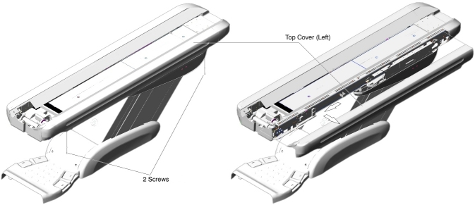
Top Cover Installation:
Insert the inside hook into the gap between the bracket and top frame, and slide the top cover away from the Gantry.
Screw the top cover to the Table top frame.
Illustration 2: Top Cover (Left) Installation
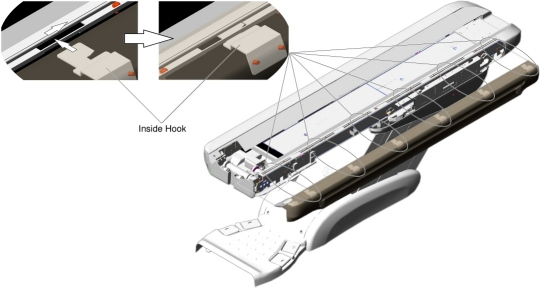
Front Top Cover Removal:
Raise the Table to its highest position.
Remove two screws.
Slide the front top cover toward the Gantry, and remove it.
Illustration 3: Front Top Cover Removal
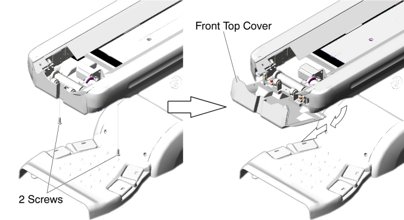
Front Top Cover Installation:
Attach the front top cover to the ball catch, and tighten the two screws.
Illustration 4: Front Top Cover Installation
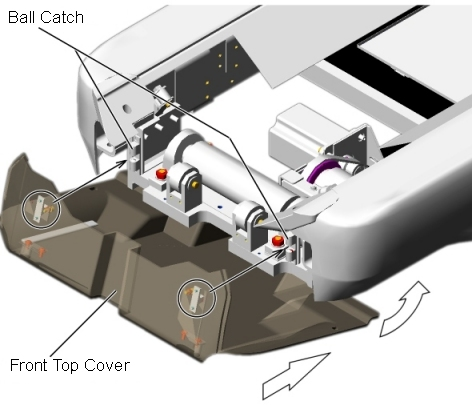
-
Rear Top Cover Removal:
Raise the Table to its highest position.
Remove the four screws holding both of the top covers.
Slide the top covers toward the Gantry, and remove the top covers.
Illustration 5: Both Top Covers Removal
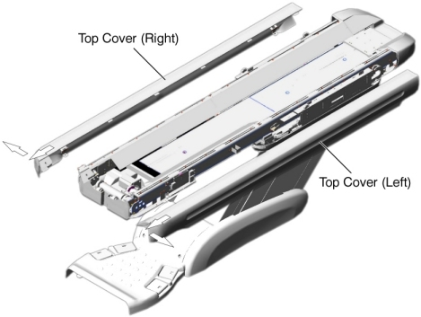
Remove the following screws (see Illustration 6).
For GT2000 : 7 screws.
For GT1700 : 6 screws.
Slide the rear top cover away from the Gantry, and remove it.
Illustration 6: Rear Top Cover Removal
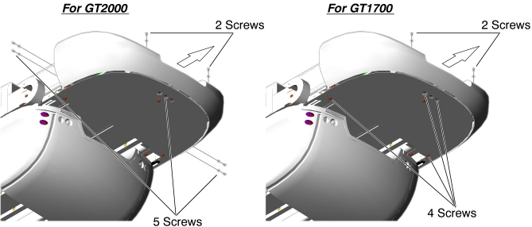
Rear Top Cover Installation:
Fit the rear top cover into the Table frame, and tighten the five screws.
Re-install both of the top covers.
IMS Rear Cover Removal:
Raise the Table to its highest position.
Remove two screws.
Open the IMS rear cover, and pull it out of the hook.
Illustration 7: IMS Rear Cover Removal
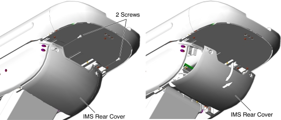
IMS Rear Cover Installation:
Set the hook inside the IMS rear cover to the Table bracket, and tighten the two screws.
Illustration 8: IMS Rear Cover Installation
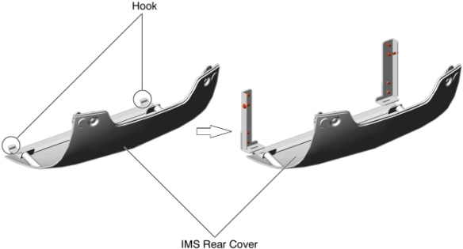
-
IMS Side Cover Removal:
Raise the Table to its highest position.
Remove two caps and two screws.
Slide the IMS side cover free from the Table until the connectors of the touch sensor switches are visible.
Remove the IMS side cover from the Table.
Illustration 9: IMS Side Cover (Left) Removal
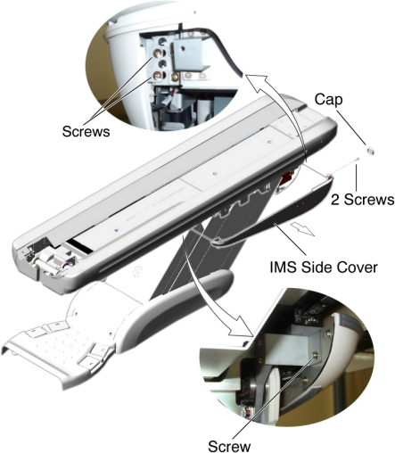
IMS Side Cover Installation:
Connect the connectors of the touch sensor switches.
Attach the IMS side cover to the ball catch, and tighten the two screws.
Illustration 10: IMS Side Cover (Left) Installation
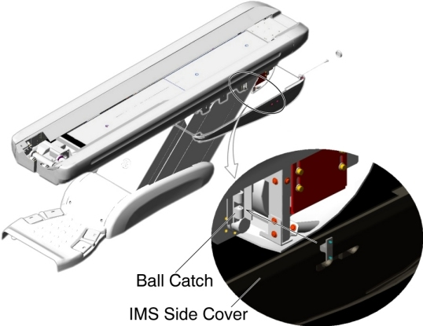
IMS Side Cover Removal:
Raise the Table to its highest position.
Remove the IMS Rear Cover.
Remove two caps and two screws.
Disconnect the cable connector of the touch sensor.
Remove a screw that fasten the touch sensor to the IMS Side Cover, and remove the touch sensor.
Remove a screw (located at rear of the IMS Side Cover), and loosen a screw (located at front of the IMS Side Cover), then remove the IMS Side Cover from the Table.
Illustration 11: IMS Side Cover - GT1700 (Left) Removal
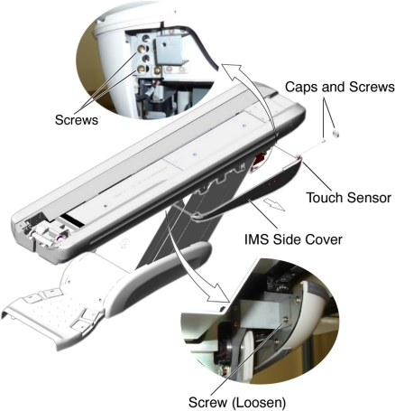
IMS Side Cover Installation:
Attach the touch sensor to the new IMS Side Cover.
Re-connect the cable connector of the touch sensor.
Attach the IMS Side Cover to the Table, and tighten the two screws.
Install the IMS Rear Cover.
Front Base Cover Removal:
Raise the Table to its highest position.
Remove two screws.
Set the front base cover up, and remove the cover by lifting it upward to release the hook.
Illustration 12: Front Base Cover Removal
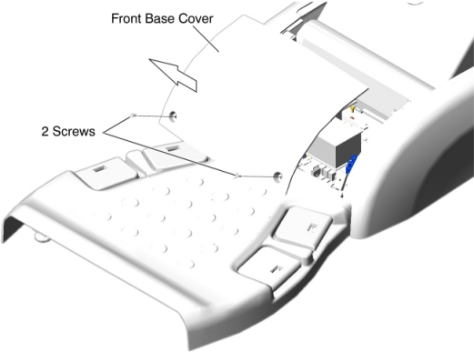
Front Base Cover Installation:
Verify that the both side covers are installed.
Set the hook inside the front base cover to the Table bracket, and tighten the two screws.
Illustration 13: Front Base Cover Installation
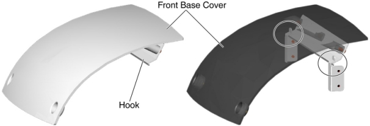
Side Base Cover Removal:
Raise the Table to its highest position.
Remove the front base cover.
Remove two screws.
Open the side base cover, and slide it toward the Gantry to release the hook.
Illustration 14: Side Base Cover (Left) Removal
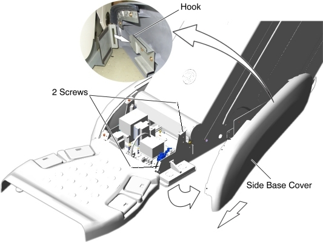
Side Base Cover Installation:
Set the hook inside the side base cover to the Table bracket, and tighten the two screws.
Re-install the front base cover.
Side Base Cover Removal:
Raise the Table to its highest position.
Remove the front base cover.
Remove two screws.
Open the side base cover, and slide it toward the Gantry to release the ball catch.
Illustration 15: Side Base Cover (Left) Removal
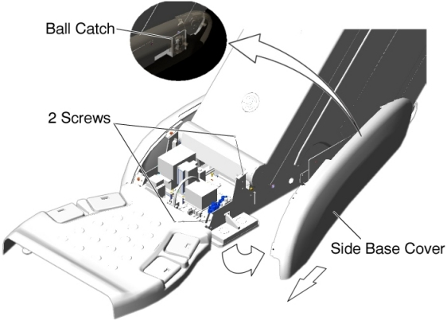
Side Base Cover Installation:
Attach the side base cover to the ball catch, and tighten the two screws.
Re-install the front base cover.
Side Plates Removal:
Raise the Table to its highest position.
Remove power from Table by turning off 120VAC, Axial Drive and HVDC switches on Service Switch Panel.
Remove the IMS side cover (left).
Remove two upper support brackets of the side plates by unscrewing 2 (x2) screws, and put the side plates on the floor.
Illustration 16: Side Plates
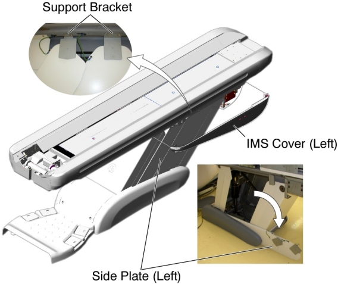
Remove the side base cover (left).
Remove two screws, and remove the front and rear side plates from the Table base.
Side Plates Installation:
Remove the cover plate from the Table.
Illustration 17: Side Plates and Cover Plate
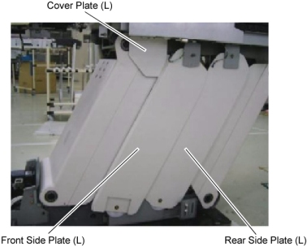
Power up the Table using the Table circuit breaker, and lower the Table to the down limit position, then remove power from the Table by turning off the Table circuit breaker.
Attach the cover plate to the Table top frame, and tighten two screws so that there is a clearance of 0.5 millimeter between the cover plate and the rear leg.
Illustration 18: Cover Plate Attachment
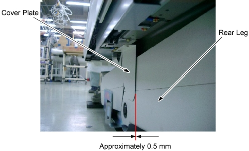
Power up the Table using the Table circuit breaker, and raise and lower the Table repeatedly to verify that the cover plate does not interfere with the rear leg plate (Fig. A) and the rear leg (Fig. B). Especially pay attention to the points circled below.
Illustration 19: Cover Plate and Rear Leg
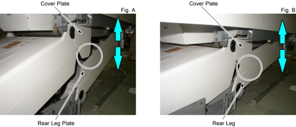
Raise the Table to its highest position, and remove power from the Table by turning off the Table circuit breaker.
Attach the upper support bracket of the rear side plate to the Table top frame, and hand tighten the two screws.
Illustration 20: Upper Support Bracket of the Rear Side Plate Attachment
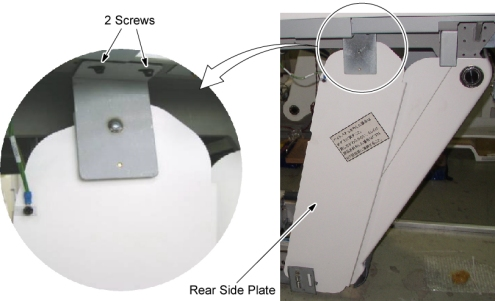
Attach a spacer, a bush, and a shaft to the lower side of the rear side plate, and screw the side plate to the Table base frame.
Illustration 21: Lower Side of the Rear Side Plate Attachment
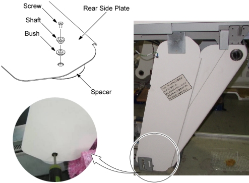
Push up the upper support bracket of the rear side plate against the Table top frame, and pull the rear side plate away from the rear leg plate, then tighten the 2 screws of the upper support bracket of the rear side plate.
Illustration 22: Rear Side Plate Positioning
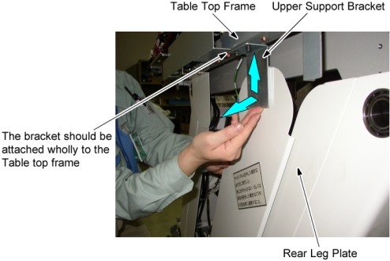
Connect the GND cable to the Table frame.
Illustration 23: Upper Support Bracket of the Rear Plate Fixing
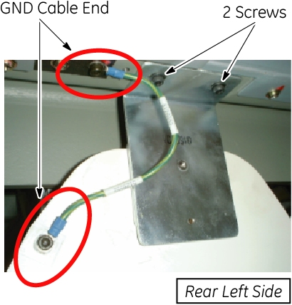
Power up the Table using the Table circuit breaker, and lower and raise the Table repeatedly to verify that the rear side plate does not interfere with the leg plate.
Illustration 24: Table Up/Down Check for Rear Side Plate
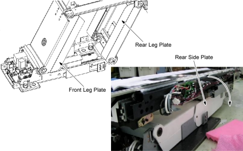
Raise the Table to its highest position, and remove power from the Table by turning off the Table circuit breaker.
Attach the upper bracket of the front side plate to the Table top frame, and hand tighten the two screws.
Illustration 25: Upper Support Bracket of the Front Side Plate Attachment
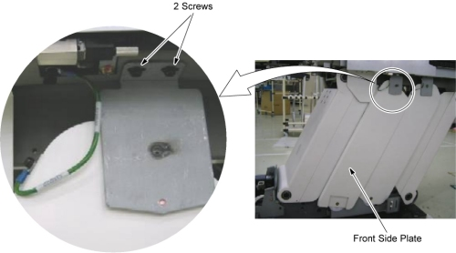
Attach a spacer, a bush, and a shaft to the lower side of the front side plate, and screw the side plate to the Table base frame.
Illustration 26: Lower Side of the Front Side Plate Attachment
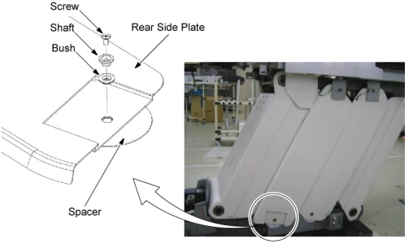
Push up the upper support bracket of the front side plate against the Table top frame, and pull the upper support bracket way from the cover plate, then tighten the 2 screws of the upper support bracket of the front side plate.
Connect the GND cable to the Table frame.
Illustration 27: Upper Support Bracket of the Front Side Plate Fixing
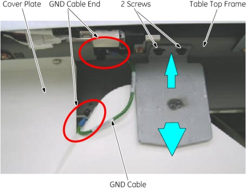
Verify that the front side plate does not interfere with the cover plate.
Illustration 28: Cover Plate and Front Side Plate
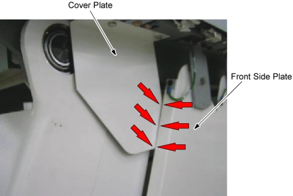
Power up the Table using the Table circuit breaker, and lower and raise the Table repeatedly to verify that the front side plate does not interfere with the leg plate.
Illustration 29: Table Up/Down Check for Front Side Plate
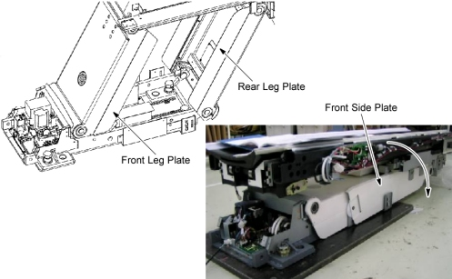
Remove power from the Table by turning off the Table circuit breaker, and re-install the front base cover, the side base cover, the IMS side covers, and the IMS rear cover.
Cover Plate Removal:
Raise the Table to its highest position.
Remove power from Table by turning off 120VAC, Axial Drive and HVDC switches on Service Switch Panel.
Remove the IMS side cover (left or Right).
Remove the cover plate by unscrewing 2 screws.
Cover Plate Installation:
Power up the Table from the Service Switch Panel, and raise the Table to its highest position.
Remove power from Table by turning off 120VAC, Axial Drive and HVDC switches on Service Switch Panel.
Remove the following Table covers:
Front Base Cover
Base Cover (Left/Right)
Front Side Plate (Left/Right)
Rear Side Plate (Left/Right)
Power up the Table from the Service Switch Panel, and lower the Table to down limit position, then turn off all 3 switches (Axial Drive, HVDC, 120VAC).
Install the Cover Plate according to Side Plate Removal / Installation, Step 2.
No finalization required.